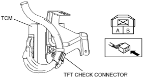

Workshop Manual ➭ TRANSMISSION/TRANSAXLE ➭ AUTOMATIC TRANSMISSION[SJ6A-EL] ➭ AUTOMATIC TRANSMISSION FLUID (ATF) LEVEL ADJUSTMENT [SJ6A-EL]
AUTOMATIC TRANSMISSION FLUID (ATF) LEVEL ADJUSTMENT [SJ6A-EL]
id051311260000
Automatic Transmission Fluid (ATF) Level Inspection
Caution• The ATF level cannot be adjusted correctly if the ATF temperature is not within a normal range (50—60 °C {122—140 °F}). Always perform the servicing according to the adjustment procedure.
• Remaining ATF may drip from the overflow tube even when the ATF level is less than the specified value, therefore careful determination is required.
Note• An overflow-type SJ6A-EL automatic transmission has been adopted with an overflow tube installed to the oil pan for inspection of the ATF level. Therefore, no dipstick has been equipped.
|
e5u513zw5085 |
1. Lift up the vehicle.
2. Remove the filler plug and O-ring.
|
ar8wzw00000244 |
Note• Do not mistake the overflow plug for the drain plug.
3. Remove the overflow plug and the overflow plug gasket.
4. Fill with ATF from the filler plug hole until it starts flowing from the overflow orifice.
ATF type
ATF JWS3309
Supplemental ATF amount (approx. quantity)
|
Service |
Supplemental ATF amount |
|---|---|
|
Procedure including ATF draining • Transmission replacement • Torque converter replacement • Oil cooler replacement • Control valve body replacement • TFT sensor replacement |
Fill ATF to the specified amount (approx. quantity: 7.4 L {7.8 US qt, 6.5 lmp qt}) |
|
Procedure without ATF draining • Oil seal (extension housing) replacement • Fixing oil leakage or stains |
Add small amount of ATF |
Note• Replace the O-ring if it has malfunction.
5. Coat a new O-ring with ATF, and install it to the filler plug.
Tightening torque
23.5—54.9 N·m {2.4—5.5 kgf·m, 17.4—40.4 ft·lbf}
6. Temporarily tighten the overflow plug.
7. Start the engine and warm it up by idling to increase the ATF temperature.
Note• Perform the following precedure quickly, otherwise, the ATF temperature will exceed the proper range.
8. Shift to all ranges, from the P position to the D range, taking 2 s or more for each position or range, then after repeating the procedure two times, shift to the P position again.
Caution• Do not shift from the N position when the AT warning light is illuminated.
9. Verify that the ATF temperature is in the proper range (50—60 °C {122—140 °F}). (See Using the M-MDS.)(See Using the AT warning light.)
10. Remove the overflow plug and inspect whether the ATF is flowing from the overflow orifice with the transmission in park and engine idling.
|
amxzzw00002398 |
• If there is no ATF flowing, install the overflow plug after the engine is stopped, refill with ATF from the filler plug hole, and repeat the procedure from Step 7.
11. Wait until the ATF starts dripping from the overflow plug.
|
ar8wzw00000245 |
Caution• Be sure to install the overflow plug gasket in the correct direction as shown in the figure
|
ar8wzw00000230 |
12. If ATF dripping is verified, install a new overflow plug gasket and overflow plug.
Tightening torque
17.5—22.5 N·m {1.8—2.2 kgf·m, 13.0—16.5 ft·lbf}
13. Wipe off any ATF drips after tightening the overflow plug.
14. Lower the vehicle.
1. Connect the M-MDS to the vehicle DLC-2 16-pin connector.
|
amxzzw00002399 |
2. Verify the ATF temperature using the PID/data monitor “TFT”.
3. Warm up the automatic transmission until the ATF temperature is 50—60 °C {122—140 °F}.
1. Short the TFT check connector terminal A and B of the TCM.
|
 amxzzw00002400 |
2. Perform the following operations to activate the control for the oil level adjustment.
• Continue the shifting operation from N to D, D to N within 1.5 s until the AT warning light illuminates.
Note• When adjusting the ATF level, refer to the following chart and verify the specified ATF temperature (50—60 °C {122—140 °F}).
AT warning light illumination chart for ATF level adjustment
|
ATF condition |
Time chart |
|---|---|
|
ATF Temperature below 50 °C {122 °F} • ATF temperature is lower than a ATF level adjustable temperature. |
|
|
ATF Temperature 50—60 °C {122—140 °F} • ATF temperature is same a ATF level adjustable temperature. |
|
|
ATF Temperature above 60 °C {140 °F} • ATF temperature is higher than a ATF level adjustable temperature. |